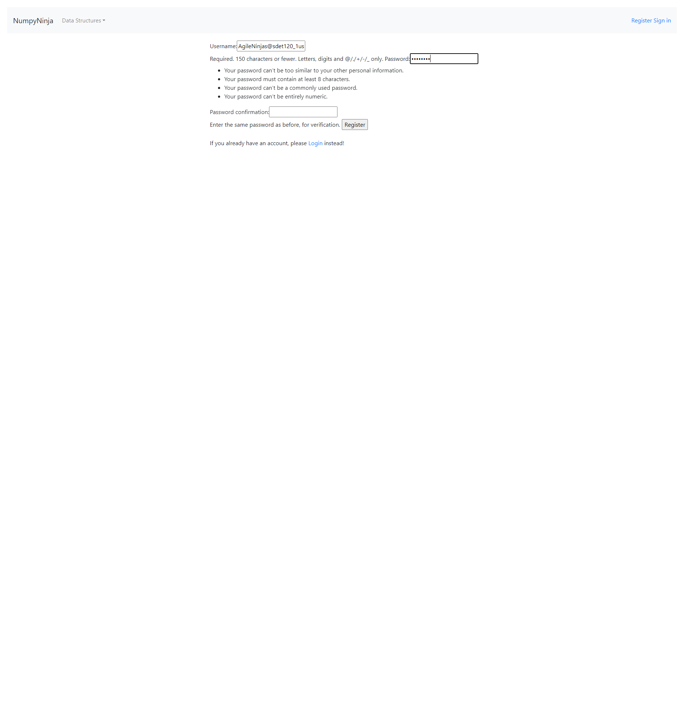

-
DS-Algo Home Page feature
5:58:46 PM / 00:00:14:511 Pass
DS-Algo Home Page feature
07.23.2023 5:58:46 PM 07.23.2023 5:59:00 PM 00:00:14:511 · #test-id=1PassUser launch home page of an dsalgo projectGiven The user opens DS Algo portal linkWhen The user clicks the "Get Started" buttonThen The user should be redirected to homepagePassUser is on Home page and click getstarted link on home page without sign inPassUser is on Home page and click getstarted link on home page without sign inGiven The user is on Home pageWhen The user clicks on Get Started link on homepage "Datastructures" without loginThen It should alert the user with a message "You are not logged in"PassUser is on Home page and click getstarted link on home page without sign inGiven The user is on Home pageWhen The user clicks on Get Started link on homepage "Arrays" without loginThen It should alert the user with a message "You are not logged in"PassUser is on Home page and click getstarted link on home page without sign inGiven The user is on Home pageWhen The user clicks on Get Started link on homepage "Linkedlist" without loginThen It should alert the user with a message "You are not logged in"PassUser is on Home page and click getstarted link on home page without sign inGiven The user is on Home pageWhen The user clicks on Get Started link on homepage "Stack" without loginThen It should alert the user with a message "You are not logged in"PassUser is on Home page and click getstarted link on home page without sign inGiven The user is on Home pageWhen The user clicks on Get Started link on homepage "Queue" without loginThen It should alert the user with a message "You are not logged in"PassUser is on Home page and click getstarted link on home page without sign inGiven The user is on Home pageWhen The user clicks on Get Started link on homepage "Tree" without loginThen It should alert the user with a message "You are not logged in"PassUser is on Home page and click getstarted link on home page without sign inGiven The user is on Home pageWhen The user clicks on Get Started link on homepage "Graph" without loginThen It should alert the user with a message "You are not logged in"PassUser is on Home page and click on dropdown without sign inPassUser is on Home page and click on dropdown without sign inGiven The user is on Home pageWhen The user clicks on dropdown "Arrays" without loginThen It should alert the user with a message "You are not logged in"PassUser is on Home page and click on dropdown without sign inGiven The user is on Home pageWhen The user clicks on dropdown "Linked List" without loginThen It should alert the user with a message "You are not logged in"PassUser is on Home page and click on dropdown without sign inGiven The user is on Home pageWhen The user clicks on dropdown "Stack" without loginThen It should alert the user with a message "You are not logged in"PassUser is on Home page and click on dropdown without sign inGiven The user is on Home pageWhen The user clicks on dropdown "Queue" without loginThen It should alert the user with a message "You are not logged in"PassUser is on Home page and click on dropdown without sign inGiven The user is on Home pageWhen The user clicks on dropdown "Tree" without loginThen It should alert the user with a message "You are not logged in"PassUser is on Home page and click on dropdown without sign inGiven The user is on Home pageWhen The user clicks on dropdown "Graph" without loginThen It should alert the user with a message "You are not logged in"PassUser is on Home page and click on sign inGiven The user is on Home pageWhen The user clicks "Sign in"Then The user should be redirected to Sign in pagePassUser is on Home page and click on RegisterGiven The user is on Home pageWhen The user clicks "Register"Then The user should be redirected to Register form -
DS-Algo Portal Register Page
5:59:00 PM / 00:00:49:253 Fail
DS-Algo Portal Register Page
07.23.2023 5:59:00 PM 07.23.2023 5:59:50 PM 00:00:49:253 · #test-id=84PassThe user is presented with error message for empty fields below Username textboxGiven The user opens Register PageWhen he user clicks "Register" button with all fields emptyThen It should display an error "Please fill out this field." below Username textboxPassThe user is presented with error message for empty fields below Password textboxGiven The user opens Register PageWhen The user clicks "Register" button after entering username with other fields emptyusername AgileNinjas@sdet120_1 Then It should display an error "Please fill out this field" below Password textboxPassThe user is presented with error message for empty fields below Password Confirmation textboxGiven The user opens Register PageWhen The user clicks "Register" button after entering "username" and "password" with Password Confirmation field emptyusername password AgileNinjas@sdet120_1 testpassword Then It should display an error "Please fill out this field." below Password Confirmation textboxFailThe user is presented with error message for invalid usernameGiven The user opens Register PageWhen The user enters a "username" with characters other than Letters, digits and "@/./+/-/_"username password password confirmation &**&**& testpassword testpassword Then It should display an error message "Please enter a valid username"AppHooks.ApplicationHooks.tearDown(io.cucumber.java.Scenario)The_user_is_presented_with_error_message_for_invalid_usernameFailThe user is presented with error message for username already existsGiven The user is presented with error message for username already existsWhen The user enters a valid existing "username" with "password" and "password confirmation"username password password confirmation AgileNinjas@sdet120_1 RT56YUabc RT56YUabc Then It should display an error message "Username already exists"AppHooks.ApplicationHooks.tearDown(io.cucumber.java.Scenario)The_user_is_presented_with_error_message_for_username_already_existsFailThe user is presented with error message for password mismatchGiven The user opens Register PageWhen The user clicks "Register" button after entering valid "username" and different passwords in "password" and "password confirmation" fieldsusername password password confirmation AgileNinjas@sdet120_1 testpassword testpassword1 Then It should display an error message "password_mismatch:The two password fields didn’t match."AppHooks.ApplicationHooks.tearDown(io.cucumber.java.Scenario)The_user_is_presented_with_error_message_for_password_mismatchFailThe user is presented with error message for password with characters less than 8Given The user opens Register PageWhen The user enters a valid "username" and "password" with characters less than 8username password password confirmation AgileNinjas@sdet120_1 a1b2c3d a1b2c3d Then It should display an error message "Password should contain at least 8 characters"AppHooks.ApplicationHooks.tearDown(io.cucumber.java.Scenario)The_user_is_presented_with_error_message_for_password_with_characters_less_than_8 FailThe user is presented with error message for password with only numbersGiven The user opens Register PageWhen The user enters a valid "username" and "password" with only numbers
FailThe user is presented with error message for password with only numbersGiven The user opens Register PageWhen The user enters a valid "username" and "password" with only numbersusername password password confirmation AgileNinjas@sdet120_1 12345678 12345678 Then It should display an error message "Password can’t be entirely numeric."AppHooks.ApplicationHooks.tearDown(io.cucumber.java.Scenario)FailThe user is presented with error message for password too similar to your other personal informationGiven The user opens Register PageWhen The user enters a valid "username" and "password" similar to usernameusername password password confirmation AgileNinjas@sdet120_1 testsdet84 testsdet84 Step skippedThen It should display an error message "password can’t be too similar to your other personal information."Step skippedAppHooks.ApplicationHooks.tearDown(io.cucumber.java.Scenario)FailThe user is presented with error message for commonly used passwordGiven The user opens Register PageWhen The user enters a valid "username" and commonly used password "password"username password password confirmation AgileNinjas@sdet120_1 Welcome1 Welcome1 Step skippedThen It should display an error message "Password can’t be commonly used password"Step skippedAppHooks.ApplicationHooks.tearDown(io.cucumber.java.Scenario)FailThe user is succesfully able to registerGiven The user opens Register PageWhen The user enters a valid "username" and "password" and "password confirmation"username password password confirmation AgileNinjas@sdet120_1 RT56YU@78 RT56YU@78 Step skippedThen The user should be redirected to Homepage with the message "New Account Created. You are logged in as" Step skippedAppHooks.ApplicationHooks.tearDown(io.cucumber.java.Scenario) -
DS-Algo SignIn Page feature
5:59:50 PM / 00:00:00:484 Fail
DS-Algo SignIn Page feature
07.23.2023 5:59:50 PM 07.23.2023 5:59:50 PM 00:00:00:484 · #test-id=140FailVerifying Register linkGiven The user is on signin pageWhen The user clicks on register link on signin pageStep skippedThen The user redirected to Registration page from signin pageStep skippedAppHooks.ApplicationHooks.tearDown(io.cucumber.java.Scenario)FailUser on login page and login with invalid inputsFailUser on login page and login with invalid inputsGiven The user is on signin pageWhen The user enter invalid "user" and ""Step skippedThen click login buttonStep skippedAppHooks.ApplicationHooks.tearDown(io.cucumber.java.Scenario)FailUser on login page and login with invalid inputsGiven The user is on signin pageWhen The user enter invalid "" and "password"Step skippedThen click login buttonStep skippedAppHooks.ApplicationHooks.tearDown(io.cucumber.java.Scenario)FailUser on login page and login with invalid inputsGiven The user is on signin pageWhen The user enter invalid "" and ""Step skippedThen click login buttonStep skippedAppHooks.ApplicationHooks.tearDown(io.cucumber.java.Scenario)FailUseinvalid and valid inputs from Excelr on login page and login withFailUseinvalid and valid inputs from Excelr on login page and login withGiven The user is on signin pageWhen The user enter sheet "Sheet1" and 0Step skippedThen click login button to verifyStep skippedAppHooks.ApplicationHooks.tearDown(io.cucumber.java.Scenario)FailUseinvalid and valid inputs from Excelr on login page and login withGiven The user is on signin pageWhen The user enter sheet "Sheet1" and 1Step skippedThen click login button to verifyStep skippedAppHooks.ApplicationHooks.tearDown(io.cucumber.java.Scenario)FailUseinvalid and valid inputs from Excelr on login page and login withGiven The user is on signin pageWhen The user enter sheet "Sheet1" and 2Step skippedThen click login button to verifyStep skippedAppHooks.ApplicationHooks.tearDown(io.cucumber.java.Scenario)FailUseinvalid and valid inputs from Excelr on login page and login withGiven The user is on signin pageWhen The user enter sheet "Sheet1" and 3Step skippedThen click login button to verifyStep skippedAppHooks.ApplicationHooks.tearDown(io.cucumber.java.Scenario)FailThe user is able to signin with registered credentialFailThe user is able to signin with registered credentialGiven The user is on the Sign in pageWhen The user enters a valid "uthika" and "ninja@study"Step skippedThen click login button to verifyStep skippedAppHooks.ApplicationHooks.tearDown(io.cucumber.java.Scenario)FailVerifying signout linkGiven The user is in the Home page with valid log inWhen The user clicks on "Sign out"Step skippedThen It should display the success message "Logged out successfully"Step skippedAppHooks.ApplicationHooks.tearDown(io.cucumber.java.Scenario) -
DS-Algo DataStructure feature
5:59:50 PM / 00:00:00:000 Pass
DS-Algo DataStructure feature
07.23.2023 5:59:50 PM 07.23.2023 5:59:50 PM 00:00:00:000 · #test-id=194 -
DS-Algo DataStructure feature
5:59:50 PM / 00:00:00:000 Pass
DS-Algo DataStructure feature
07.23.2023 5:59:50 PM 07.23.2023 5:59:50 PM 00:00:00:000 · #test-id=195 -
DS-Algo DataStructure feature
5:59:50 PM / 00:00:00:000 Pass
DS-Algo DataStructure feature
07.23.2023 5:59:50 PM 07.23.2023 5:59:50 PM 00:00:00:000 · #test-id=196 -
DS-Algo DataStructure feature
5:59:50 PM / 00:00:00:000 Pass
DS-Algo DataStructure feature
07.23.2023 5:59:50 PM 07.23.2023 5:59:50 PM 00:00:00:000 · #test-id=197 -
DS-Algo DataStructure feature
5:59:50 PM / 00:00:00:000 Pass
DS-Algo DataStructure feature
07.23.2023 5:59:50 PM 07.23.2023 5:59:50 PM 00:00:00:000 · #test-id=198
-
org.openqa.selenium.NoSuchElementException
5 tests
org.openqa.selenium.NoSuchElementException
5 failedStatus Timestamp TestName Fail 17:59:01 PM Then It should display an error message "Please enter a valid username" DS-Algo Portal Register Page.The user is presented with error message for invalid username.Then It should display an error message "Please enter a valid username"Fail 17:59:12 PM Then It should display an error message "Username already exists" DS-Algo Portal Register Page.The user is presented with error message for username already exists.Then It should display an error message "Username already exists"Fail 17:59:23 PM Then It should display an error message "password_mismatch:The two password fields didn’t match." DS-Algo Portal Register Page.The user is presented with error message for password mismatch.Then It should display an error message "password_mismatch:The two password fields didn’t match."Fail 17:59:34 PM Then It should display an error message "Password should contain at least 8 characters" DS-Algo Portal Register Page.The user is presented with error message for password with characters less than 8.Then It should display an error message "Password should contain at least 8 characters"Fail 17:59:44 PM Then It should display an error message "Password can’t be entirely numeric." DS-Algo Portal Register Page.The user is presented with error message for password with only numbers.Then It should display an error message "Password can’t be entirely numeric." -
org.openqa.selenium.NoSuchWindowException
27 tests
org.openqa.selenium.NoSuchWindowException
27 failedStatus Timestamp TestName Fail 17:59:49 PM AppHooks.ApplicationHooks.tearDown(io.cucumber.java.Scenario) DS-Algo Portal Register Page.The user is presented with error message for password with only numbers.AppHooks.ApplicationHooks.tearDown(io.cucumber.java.Scenario)Fail 17:59:49 PM Given The user opens Register Page DS-Algo Portal Register Page.The user is presented with error message for password too similar to your other personal information.Given The user opens Register PageFail 17:59:49 PM AppHooks.ApplicationHooks.tearDown(io.cucumber.java.Scenario) DS-Algo Portal Register Page.The user is presented with error message for password too similar to your other personal information.AppHooks.ApplicationHooks.tearDown(io.cucumber.java.Scenario)Fail 17:59:49 PM Given The user opens Register Page DS-Algo Portal Register Page.The user is presented with error message for commonly used password.Given The user opens Register PageFail 17:59:50 PM AppHooks.ApplicationHooks.tearDown(io.cucumber.java.Scenario) DS-Algo Portal Register Page.The user is presented with error message for commonly used password.AppHooks.ApplicationHooks.tearDown(io.cucumber.java.Scenario)Fail 17:59:50 PM Given The user opens Register Page DS-Algo Portal Register Page.The user is succesfully able to register.Given The user opens Register PageFail 17:59:50 PM AppHooks.ApplicationHooks.tearDown(io.cucumber.java.Scenario) DS-Algo Portal Register Page.The user is succesfully able to register.AppHooks.ApplicationHooks.tearDown(io.cucumber.java.Scenario)Fail 17:59:50 PM Given The user is on signin page DS-Algo SignIn Page feature.Verifying Register link.Given The user is on signin pageFail 17:59:50 PM AppHooks.ApplicationHooks.tearDown(io.cucumber.java.Scenario) DS-Algo SignIn Page feature.Verifying Register link.AppHooks.ApplicationHooks.tearDown(io.cucumber.java.Scenario)Fail 17:59:50 PM Given The user is on signin page DS-Algo SignIn Page feature.User on login page and login with invalid inputs.Given The user is on signin pageFail 17:59:50 PM AppHooks.ApplicationHooks.tearDown(io.cucumber.java.Scenario) DS-Algo SignIn Page feature.User on login page and login with invalid inputs.AppHooks.ApplicationHooks.tearDown(io.cucumber.java.Scenario)Fail 17:59:50 PM Given The user is on signin page DS-Algo SignIn Page feature.User on login page and login with invalid inputs.Given The user is on signin pageFail 17:59:50 PM AppHooks.ApplicationHooks.tearDown(io.cucumber.java.Scenario) DS-Algo SignIn Page feature.User on login page and login with invalid inputs.AppHooks.ApplicationHooks.tearDown(io.cucumber.java.Scenario)Fail 17:59:50 PM Given The user is on signin page DS-Algo SignIn Page feature.User on login page and login with invalid inputs.Given The user is on signin pageFail 17:59:50 PM AppHooks.ApplicationHooks.tearDown(io.cucumber.java.Scenario) DS-Algo SignIn Page feature.User on login page and login with invalid inputs.AppHooks.ApplicationHooks.tearDown(io.cucumber.java.Scenario)Fail 17:59:50 PM Given The user is on signin page DS-Algo SignIn Page feature.Useinvalid and valid inputs from Excelr on login page and login with.Given The user is on signin pageFail 17:59:50 PM AppHooks.ApplicationHooks.tearDown(io.cucumber.java.Scenario) DS-Algo SignIn Page feature.Useinvalid and valid inputs from Excelr on login page and login with.AppHooks.ApplicationHooks.tearDown(io.cucumber.java.Scenario)Fail 17:59:50 PM Given The user is on signin page DS-Algo SignIn Page feature.Useinvalid and valid inputs from Excelr on login page and login with.Given The user is on signin pageFail 17:59:50 PM AppHooks.ApplicationHooks.tearDown(io.cucumber.java.Scenario) DS-Algo SignIn Page feature.Useinvalid and valid inputs from Excelr on login page and login with.AppHooks.ApplicationHooks.tearDown(io.cucumber.java.Scenario)Fail 17:59:50 PM Given The user is on signin page DS-Algo SignIn Page feature.Useinvalid and valid inputs from Excelr on login page and login with.Given The user is on signin pageFail 17:59:50 PM AppHooks.ApplicationHooks.tearDown(io.cucumber.java.Scenario) DS-Algo SignIn Page feature.Useinvalid and valid inputs from Excelr on login page and login with.AppHooks.ApplicationHooks.tearDown(io.cucumber.java.Scenario)Fail 17:59:50 PM Given The user is on signin page DS-Algo SignIn Page feature.Useinvalid and valid inputs from Excelr on login page and login with.Given The user is on signin pageFail 17:59:50 PM AppHooks.ApplicationHooks.tearDown(io.cucumber.java.Scenario) DS-Algo SignIn Page feature.Useinvalid and valid inputs from Excelr on login page and login with.AppHooks.ApplicationHooks.tearDown(io.cucumber.java.Scenario)Fail 17:59:50 PM Given The user is on the Sign in page DS-Algo SignIn Page feature.The user is able to signin with registered credential.Given The user is on the Sign in pageFail 17:59:50 PM AppHooks.ApplicationHooks.tearDown(io.cucumber.java.Scenario) DS-Algo SignIn Page feature.The user is able to signin with registered credential.AppHooks.ApplicationHooks.tearDown(io.cucumber.java.Scenario)Fail 17:59:50 PM Given The user is in the Home page with valid log in DS-Algo SignIn Page feature.Verifying signout link.Given The user is in the Home page with valid log inFail 17:59:50 PM AppHooks.ApplicationHooks.tearDown(io.cucumber.java.Scenario) DS-Algo SignIn Page feature.Verifying signout link.AppHooks.ApplicationHooks.tearDown(io.cucumber.java.Scenario)
Started
Jul 23, 2023 05:58:37 PM
Ended
Jul 23, 2023 05:59:50 PM
Features Passed
6
Features Failed
2
Features
Scenarios
Steps
Timeline